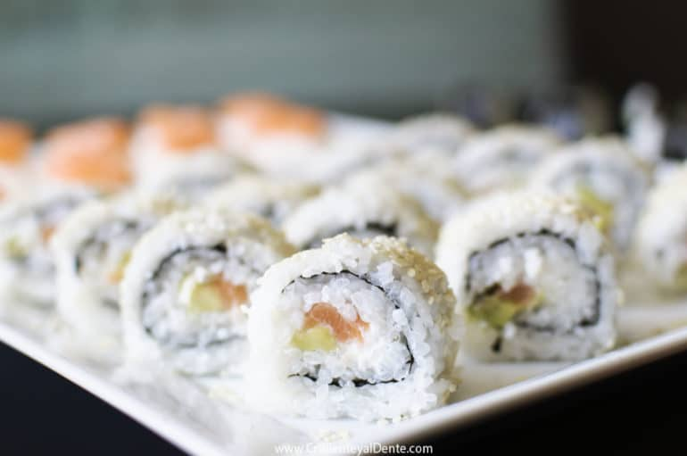
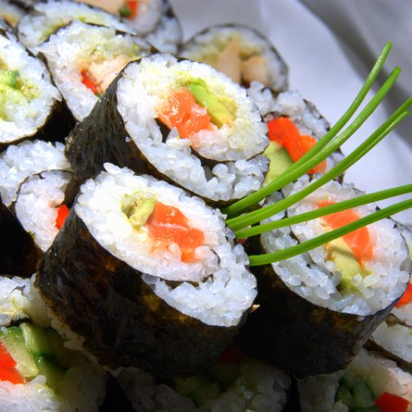

RECETA DE SUSHI DE SALMÓN Y PHILADELPHIA

Esta receta es para cuatro comensales, se tarda alrededor de 2 horas y 30 minutos en preparala,
su dificultad es media y es considerado como plato principal.
INGREDIENTES:
- 200 gramos de arroz especial para sushi
- 3 algas nori
- 1 pepino baby
- 1 aguacate
- 1 lomo de salmón previamente congelado
- Queso crema Philadelphia
- 1 puñado de semillas de sésamo
- Salasa de soja
- 3 cucharadas soperas de azúcar
- 3 cucharadas soperas de vinagre de vino o de manzana
- Agua
ELABORACIÓN:
- Lava el arroz hasta que el agua salga limpia.Cuécelo según las instrucciones del envase.
- Descongele el salmón y cortelo en tiras pequeñas y homogéneas para enrollarlas.
- Cuando el arroz ya está listo, se extiende sobre una bandeja o recipiente amplio y se
mueve sin destrozar con una lengua.
- Añadir 3 cucharadas de avúcar disueltas en 3 cucharadas de vinagre. Y abanicar durante 5-10 minutos.
- Para montar los makis de salmón y aguacate, coloca la parte rugosa del alga nori hacia ti,
sobre una esterilla.Colocar en hileras todos los ingredientes que queremos en el sushi de salmón y Philadelphia,
y enrolla con fuerza, prensando hacia ti.
- Una vez terminado, emplátalos y sírvelos acompañados de salsa de soja
